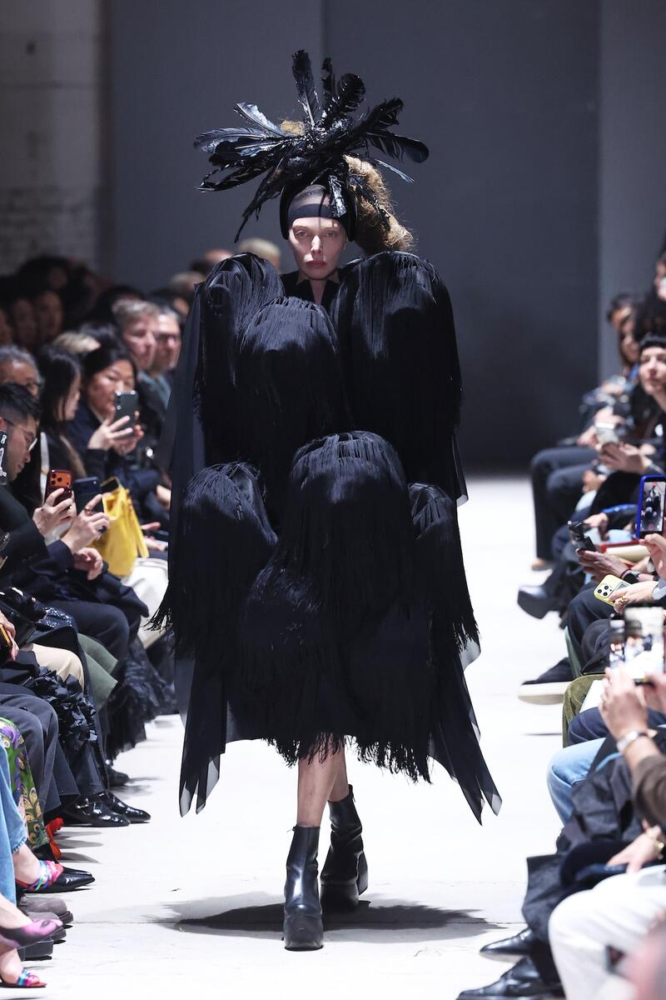

Glenn Martens and the art of dressing real

Glenn Martens takes the helm at Maison Margiela. John Galliano's decade at the house has ended after ten years of celebrated work. Martens inherits a legacy steeped in deconstruction and theatrical precedent. His first collection arrives not as a rejection of the past but as a recalibration toward the present.
The SS 2026 show photographed the collection on Paris streets. Models walked past storefronts and cafés. The setting rejected the cathedral-like theatricality of Galliano's tenure. Instead Martens presented clothes that exist in real spaces. Structured coats hang from shoulders as though their wearers are heading somewhere specific. Tailored trousers sit with precision. Jewelry commands attention without apology.
Martens built his reputation at Y/Project. That label occupied a particular position in contemporary fashion. Its clothes contained awkwardness. Sensuality emerged from unexpected proportions. Seams appeared where they logically should not. The experimental DNA of that work now enters the Margiela archive. The undone dress codes that Margiela pioneered meet a designer who understands how to make abstraction wearable.

Maison Margiela collection detail, SS 2026
The pieces register as contemporary without abandoning Margiela's foundational principles. Silhouettes reference tailoring traditions while allowing for movement. Fabrics combine the precious with the ordinary. A jacket constructed from salvaged materials sits alongside a silk charmeuse dress. The hierarchy of materials that once defined luxury fashion dissolves. What matters is how the garment behaves on the body.
Martens has spoken about his interest in authenticity. He does not mean this in the nostalgic sense. Authenticity here means acknowledging how clothes function in daily life. The collection includes pieces designed for specific moments. A coat for transit. A shirt for work. Trousers for standing in crowds. Nothing in the collection pretends toward preciousness. Everything assumes its wearer has somewhere to be.
Fashion week runway moment, Spring/Summer 2026
The color palette emphasizes neutrality. Blacks and grays dominate. Cream appears frequently. Terracotta emerges as a recurring accent. These colors reflect actual urban environments. They do not announce themselves. They blend with how people actually dress when considered thought guides their choices but does not overwhelm them.
Separately John Galliano has signed a two-year creative partnership with Zara. His work with the retailer will explore accessible versions of his design vocabulary. The timing underscores something about contemporary fashion leadership. The houses that once dominated creative discourse now coexist with multiple simultaneous projects. Galliano's Margiela departure does not signal a retreat. It indicates evolution. Martens advances at Maison Margiela while Galliano expands elsewhere.
The SS 2026 collection arrives at a specific cultural moment. Fashion feels ready to move away from extremity. The headlines that once celebrated shocking silhouettes seem to have quieted. Martens has read this moment correctly. His clothes acknowledge that avant-garde thinking need not manifest as visual confrontation. The most radical act available to contemporary fashion may be allowing clothes to function simply and deliberately as clothes.